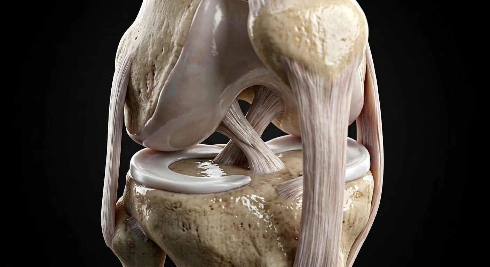

Achilles (calcaneal) tendonRotator cuff tendonsSupraspinatus tendonSpinal ligamentsAnkle collateral ligamentsGlenoid labrumSubscapularis tendonJoint capsule & synoviumAnterior cruciate ligamentMedial collateral ligamentMenisci (medial & lateral)Articular cartilageGlenohumeral capsule & ligamentsQuadriceps tendonInfraspinatus tendonTeres minor tendonPosterior cruciate ligamentLateral collateral ligamentPrepatellar bursaPatellar ligament- 01Anterior cruciate ligament
- 02Posterior cruciate ligament
- 03Medial collateral ligament
- 04Lateral collateral ligament
- 05Menisci (medial & lateral)
- 06Patellar ligament
- 07Quadriceps tendon
- 08Joint capsule & synovium
- 09Articular cartilage
- 10Prepatellar bursa
- 11Achilles (calcaneal) tendon
- 12Rotator cuff tendons
- 13Spinal ligaments
- 14Ankle collateral ligaments
- 15Supraspinatus tendon
- 16Infraspinatus tendon
- 17Teres minor tendon
- 18Subscapularis tendon
- 19Glenoid labrum
- 20Glenohumeral capsule & ligaments
How this part of the body works
Open the knee to see cruciates, collaterals and menisci; the part list then tours the other major ligaments of the body.
Read the anatomy, part by part
These 20 structures describe anatomy related to the chapter’s regional illustration. Each entry separates location, function and a clinical point.
Anterior cruciate ligament
From lateral femoral condyle to anterior tibial plateau.
What it doesBlocks anterior tibial translation; pivots in rotation.
Clinical connectionACL tear: pop + giving way; reconstructed with graft.
Posterior cruciate ligament
Medial femoral condyle to posterior tibia.
What it doesBlocks posterior tibial slide (dashboard injury).
Clinical connectionPCL injuries need far greater force than ACL.
Medial collateral ligament
Femoral epicondyle to tibial shaft, fused with meniscus.
What it doesResists valgus stress.
Clinical connectionValgus blow + medial pain = MCL; meniscus often torn with it.
Lateral collateral ligament
Femoral epicondyle to fibular head.
What it doesResists varus stress.
Clinical connectionVarus injuries are rarer and often hit the peroneal nerve too.
Menisci (medial & lateral)
Fibrocartilage crescents on the tibial plateau.
What it doesLoad sharing, shock absorption, joint lubrication.
Clinical connectionMedial meniscus tears most — "unhappy triad" with ACL+MCL.
Patellar ligament
Patella to tibial tuberosity (quadriceps continuation).
What it doesTransmits quadriceps force to the tibia.
Clinical connectionPatellar tendinopathy = jumper's knee.
Quadriceps tendon
Four muscle heads onto the patella.
What it doesExtensor mechanism origin.
Clinical connectionRupture in older patients: cannot straight-leg raise.
Joint capsule & synovium
Fibrous sleeve lined by synovial membrane.
What it doesContains synovial fluid; proprioceptive nerves.
Clinical connectionEffusion is the capsule distending — tap it to diagnose.
Articular cartilage
Hyaline cartilage 2–4 mm on joint surfaces.
What it doesNear-frictionless load bearing.
Clinical connectionAvascular — heals poorly; osteoarthritis is its wear.
Prepatellar bursa
Fluid sac between skin and patella.
What it doesGlides skin over bone during kneeling.
Clinical connection"Housemaid's knee" = its inflammation.
Achilles (calcaneal) tendon
Gastrocnemius + soleus to calcaneus.
What it doesStrongest tendon — push-off power.
Clinical connectionRupture: sudden pop in sprinters; Thompson test positive.
Rotator cuff tendons
Supraspinatus, infraspinatus, teres minor, subscapularis.
What it doesHold the humeral head in the glenoid.
Clinical connectionSupraspinatus is the commonest tear — painful arc.
Spinal ligaments
ALL, PLL, ligamentum flavum, supraspinous, interspinous.
What it doesSegmental stability; flavum buckles in stenosis.
Clinical connectionFlavum hypertrophy contributes to lumbar stenosis.
Ankle collateral ligaments
Deltoid medially; ATFL/CFL/PTFL laterally.
What it doesStabilise the talus.
Clinical connectionInversion sprains tear ATFL first.
Supraspinatus tendon
Over the top of the humeral head.
What it doesInitiates abduction (first 15°).
Clinical connectionMost torn cuff tendon — painful arc 60–120°.
Infraspinatus tendon
Posterior to the head.
What it doesExternal rotation.
Clinical connectionTear → weak external rotation.
Teres minor tendon
Below infraspinatus.
What it doesExternal rotation + capsule tension.
Clinical connectionPart of cuff tears in overhead athletes.
Subscapularis tendon
Front of the head from the scapular fossa.
What it doesInternal rotation; anterior stability.
Clinical connectionLift-off test detects its tear.
Glenoid labrum
Fibrocartilage rim deepening the socket.
What it doesAdds ~50% of glenoid depth.
Clinical connectionSLAP lesions in throwers; Bankart in dislocation.
Glenohumeral capsule & ligaments
Loose sleeve with three glenohumeral ligaments.
What it doesPermits huge range; limits extremes.
Clinical connectionInferior ligament fails in anterior dislocation.
Five questions about Joints & ligaments
Short answers grounded in the structures described above. Use the illustrated guide for anatomical context.
What holds a joint together?
A joint may be supported by a capsule, ligaments, tendons and nearby muscles. Exact stabilizers vary between joints; the knee also has menisci and cruciate ligaments.
What do the ACL and PCL do in the knee?
The anterior and posterior cruciate ligaments resist different directions of tibial translation and help stabilize the knee during movement.
What is the anterior cruciate ligament?
From lateral femoral condyle to anterior tibial plateau. Function: Blocks anterior tibial translation; pivots in rotation.
Where is the posterior cruciate ligament located?
Medial femoral condyle to posterior tibia. Function: Blocks posterior tibial slide (dashboard injury).
What is the function of the menisci (medial & lateral)?
Function: Load sharing, shock absorption, joint lubrication. Fibrocartilage crescents on the tibial plateau.
Related anatomy guides
Follow these connected structures and body systems in the illustrated atlas.
 SkeletonThe frame: leverage for muscle, armour for viscera, a calcium bank, and the marrow factory that makes every blood cell.↗
SkeletonThe frame: leverage for muscle, armour for viscera, a calcium bank, and the marrow factory that makes every blood cell.↗ Muscular systemEvery movement, every breath, every heartbeat's preload begins as muscle fibres sliding — here the skeletal set in écorché.↗
Muscular systemEvery movement, every breath, every heartbeat's preload begins as muscle fibres sliding — here the skeletal set in écorché.↗ Shoulder jointMobility bought at the price of stability: a shallow glenoid, a loose capsule, and four rotator-cuff tendons doing the holding.↗
Shoulder jointMobility bought at the price of stability: a shallow glenoid, a loose capsule, and four rotator-cuff tendons doing the holding.↗Further reading
General anatomy references and related source chapters for continued study. These links do not make the digital illustrations clinical images or certify every anatomical variant.
This educational page is not medical advice and has not undergone formal clinical peer review. Spotted an error? Contact the editor.
Open the realistic interactive plate, label lines, focus view and self-test.